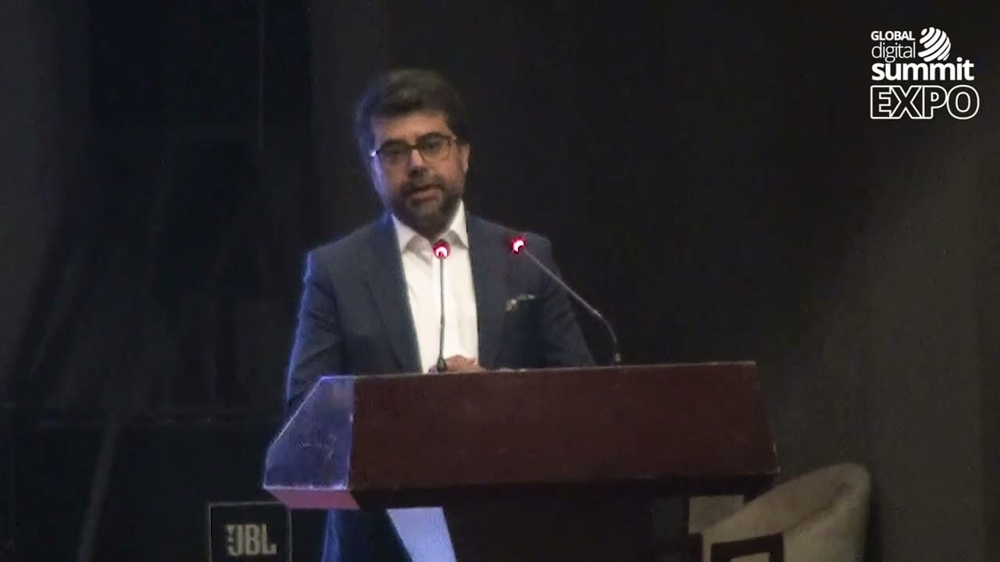
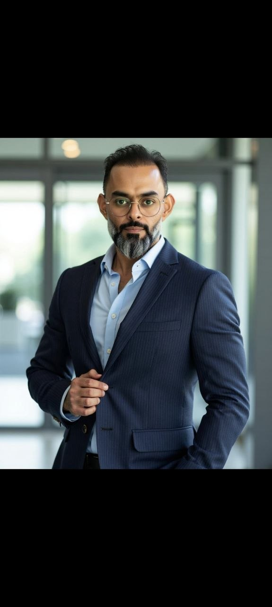

Kuantum is built on a dual-founder architecture — institutional vision paired with operational execution. Two founders who together bring GCC institutional credibility, platform commercialization expertise, and proven regional authority.
Kuantum was not built to replicate a generic virtual event tool. It was built because the GCC trade ecosystem deserved a digital exhibition infrastructure that matched the region's institutional sophistication, commercial ambition, and cross-border potential.
The GCC represents one of the world's highest-concentration commercial ecosystems. Digital-first trade infrastructure was missing at the institutional level.
Platforms fail when execution doesn't match vision. Kuantum's founding team brings operational experience at national and institutional scale — not theory.
Emerging from the CxO Global Forum — an institution with presidential-level event convening authority — Kuantum carries credibility that generic SaaS platforms cannot manufacture.
Kanwal Masroor Badvi is the Founder and CEO of CxO Global Forum — a 1,200+ member, 13-country C-level executive community with offices in London, Silicon Valley, and Riyadh. He founded CxO Global Forum in January 2020 to fill a structural gap in Pakistan's executive landscape: a serious, knowledge-sharing community where CEOs and C-level leaders could build purposeful, long-term business relationships.
Under his leadership, CxO Global Forum grew organically to 1,200+ members across 13-14 countries with a 98% member retention rate. He has hosted 4+ consecutive Global Digital Summits — including one addressed by the President of Pakistan, Dr. Arif Alvi, on IT, ICT, and AI. The Forum's flagship event, Elevate, runs as an invite-only C-level business lounge and B2B exhibition — the same model that informed Kuantum's design.
As the founding visionary behind Kuantum, Kanwal brings institutional reach, a 5-year track record of C-level community building, and direct access to government-level networks across Pakistan and the GCC — the same networks that participated in Kuantum's 2022 exhibition.
"Execution is the key. Consistency — execute consistently. My focus is to be the world's best C-level community."


Zeeshan Sabri is a GCC transformation architect and execution-focused operator with a track record that spans $80M+ procurement portfolios, national-scale digital government deployments, and cross-sector enterprise transformation across 6 GCC markets.
Appointed as Co-Founder and Chief Execution Officer of Kuantum in January 2026, Zeeshan holds full operational autonomy to lead platform commercialization, define business model and pricing strategy, architect GCC regional partnerships, and build the execution team. He is the operational force taking Kuantum from proven platform to GCC-scale commercial entity.
As founder of ClarityOS™ — the award-winning governance-embedded transformation methodology — he brings a distinctive lens to Kuantum: structure before scale, clarity before complexity, execution over aspiration. This philosophy influences how Kuantum is built, positioned, and deployed.
He is also an active Mentor at Oman Startup Hub, a member of CxO Global Forum, and was recognized with the Entrepreneurial Excellence Award for his pioneering work with ClarityOS in the GCC.
"The GCC doesn't need another virtual event tool. It needs digital trade infrastructure built with the institutional seriousness and operational discipline the region deserves."
Ideas are abundant. Execution is scarce. Kuantum exists because both founders understand that institutional credibility is built through consistent, structured delivery — not through positioning documents.
Scaling broken infrastructure doesn't create progress — it creates larger failure. The governance-first approach applied to Kuantum ensures every commercial step is built on a stable foundation.
1,200+ CxO Forum members didn't join for name-swapping. They joined because the community creates measurable business outcomes. Kuantum carries the same ethos into digital trade.
Kuantum is not built for one event cycle. It is being built as the permanent digital trade infrastructure layer for GCC ecosystems — a position that requires patient, strategic execution.
Kuantum's Advisory Committee brings together distinguished leaders across technology, government, finance, and business ecosystem development — providing strategic guidance, regional credibility, and institutional access.
The Advisory Committee was formally announced by Kuantum founding ecosystem CxO Global Forum, assembling senior executives and institutional leaders from across the GCC and Pakistan. These individuals bring direct executive experience in digital transformation, government programs, trade facilitation, and C-level ecosystem development.
The full advisory committee announcement was made by CxO Global Forum. Advisory member profiles and LinkedIn links are updated as members confirm public participation.
View Original AnnouncementWhether you want to explore a platform demo, discuss a partnership, or understand how Kuantum fits your organization — reach out to the founding team directly.